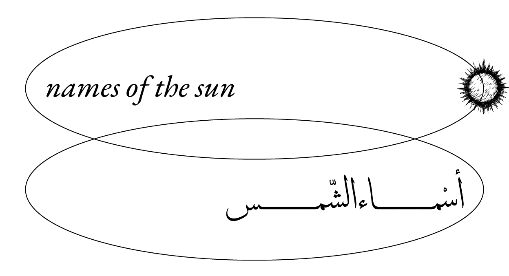

1a
Names of the Sun:
Approach

The first chapter of Resistant Atlas is called Names of the sun.
The sun, a celestial body that has guided human perception of time, holds countless meanings across temporal, spiritual, and cultural contexts.
In English, the sun is that ball of fire that gives us light, warmth, and life. It gives us time, governs space, keeps the Earth tethered to its orbit, and is the central point that holds everything in place (and in time).
However, no matter what, whether it is in the East, the West, high overhead, or underneath the horizon, it is called "the sun". Whether it is in the East, the West, high overhead, underneath the horizon, it holds the same name. This is how Western language works.
In Arabic, it is a different story.
The sun has different names based on where it is in the sky, which season, what time of day, its angle, intensity, behavior, how it is perceived, whether a friend, or an enemy. So, just from the name, you can infer crucial spatial, temporal, and meteorological information.
From the Ibn Qutaybah al-Dinawari’s Kitāb al-Anwāʾ (كتاب الأنواء) (The Meteoreological Dictionary mentioned previously) I found 42 words for the sun I could use in my research. Then I conducted the below process to make these words computationally legible to lay the groundwork for future digital tools;
01. Read the word in its original context
02. Examine the word in meteorological, poetic, observational, or even religious sources.
03. Extract environmental logic
04. Identify patterns in how it is used contextually, or etymology that may reveal embedded temporal or spatial meaning.
05. Place within environmental phenomena
06. Place the word within seasonal cycles, celestial movement, agricultural schedules, atmospheric conditions, etc
07. Assign computational parameters
08. Temporal marker, altitude and azimuth, intensity, spatial connotations.
09. Reparametrize for x, y, z, symbol, size
10. Encode those values into the tags outlined in the parametric process which include x y z coordinates, a symbol id, and a size id.
Parametric Process:
- Define primary environmental variables
Map out:- X (solar altitude)
- Y (solar azimuth)
- Z (temporal-spatial weight)
Then also an index for size & symbol.
- Assign sun height (X) based on seasons:
- X = 0 is maximum altitude at summer solstice
- X = 9 is minimum altitude at winter solstice
- X = -9 to -18 solar depression angles (civil, nautical, astronomical twilight)
- Assign east-west (Y) based on diurnal arc:
- Y = 0 is sunrise (maximum east)
- Y = 20 is noon (midpoint)
- Y = 40 is sunset (maximum west)
- Assign temporal-spatial index:
The Z-axis scale at 30 indicates a temporal concept (e.g., noon, dusk),
and 0 indicates a spatial or navigational concept (e.g., position in relation to land or structures). - Assign symbol / size:
The symbology is highlighted in the next pages, and the size (from 0 to 1) indicates intensity / seeming closeness to the sun. - Input into a parametric system:
Using Grasshopper, the parameters are embedded into a dynamic system, which can result in a visualization of the sun’s names as a zone, arc, or duration on the map.
Grasshopper and Rhino
Visualization:
This website is still under construction. More to come.